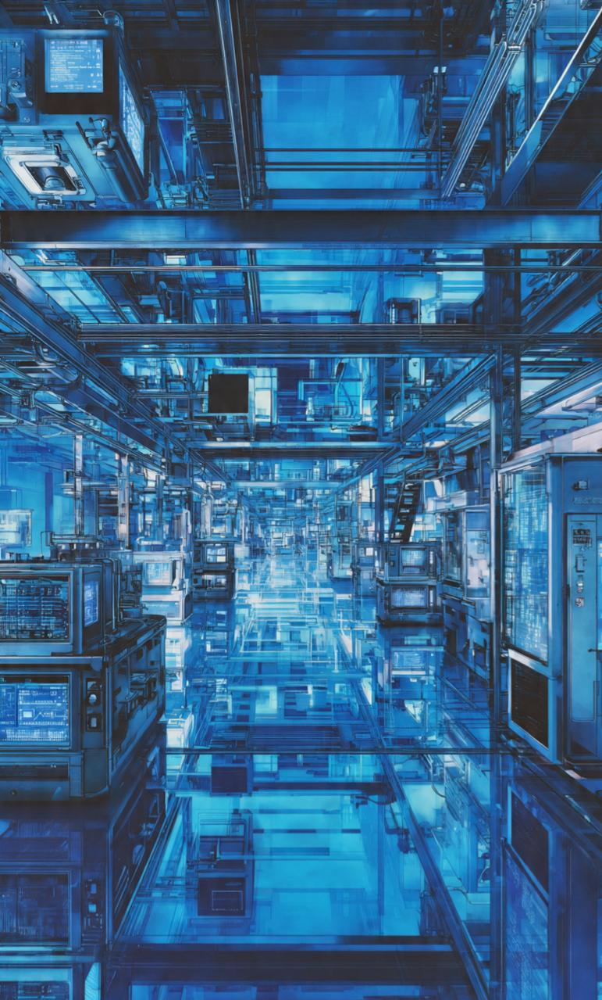

How a Midwest auto parts plant cut unplanned downtime by 41%
After mirroring three stamping lines with Synchronix, the plant's maintenance team moved from reactive repairs to a predicted-failure queue — and stopped losing entire shifts to surprise breakdowns.

Breakdowns were discovered after they already happened
The plant ran three stamping lines on a fixed preventive-maintenance calendar — every part replaced on a schedule, regardless of actual wear. When a die alignment issue caused an unplanned six-hour stoppage on Line 2, the team realized their calendar-based approach was blind to the failures that mattered most.
Maintenance leads estimated they were losing roughly one full shift per month to breakdowns that gave no advance warning, and technicians had no shared way to see a machine's actual condition — only whoever had worked that line longest "just knew" when something felt off.
Mirroring three lines in under two weeks
Synchronix connected directly to the plant's existing PLCs and historian, adding targeted vibration and thermal sensors only where the stamping presses had no existing signal for bearing wear or die misalignment.
- → Edge nodes installed on all 3 lines, streaming into the twin within the first week
- → Physics-informed models tuned to each press's actual tonnage and cycle history
- → Maintenance team given a ranked, plain-language alert queue instead of raw sensor charts
"We stopped finding out about problems from the sound of a machine stopping. Now we find out four days before, from a dashboard."
From reactive repairs to a predicted-failure queue
Within the first quarter of running live, the twin flagged a developing bearing fault on Line 3 four days before any audible symptom appeared — giving the team time to schedule the repair during a planned changeover instead of losing a shift.
Want results like this on your own line?
We'll connect a single machine and show you real telemetry inside two weeks.
Request a Demo